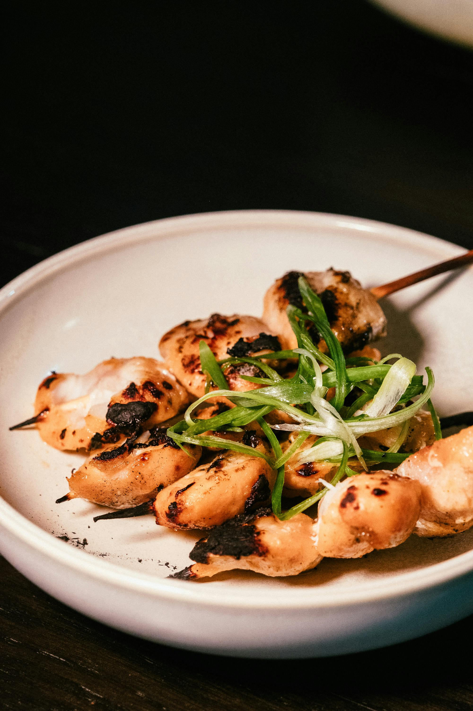

Yakitori
Grilled chicken on a skewer
A Japanese meal where chicken is grilled on a skewer over a charcoal fire and seasoned with tare sauce or salt.

A Japanese meal where chicken is grilled on a skewer over a charcoal fire and seasoned with tare sauce or salt.